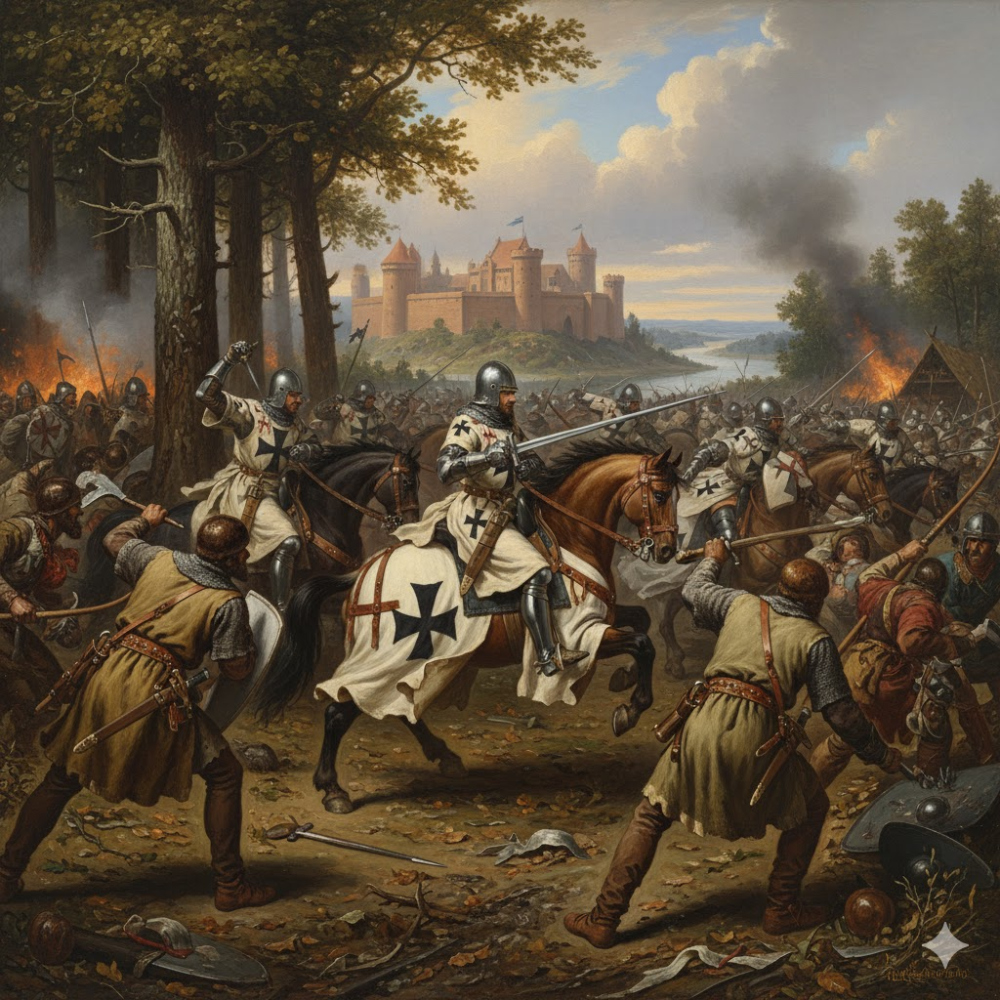
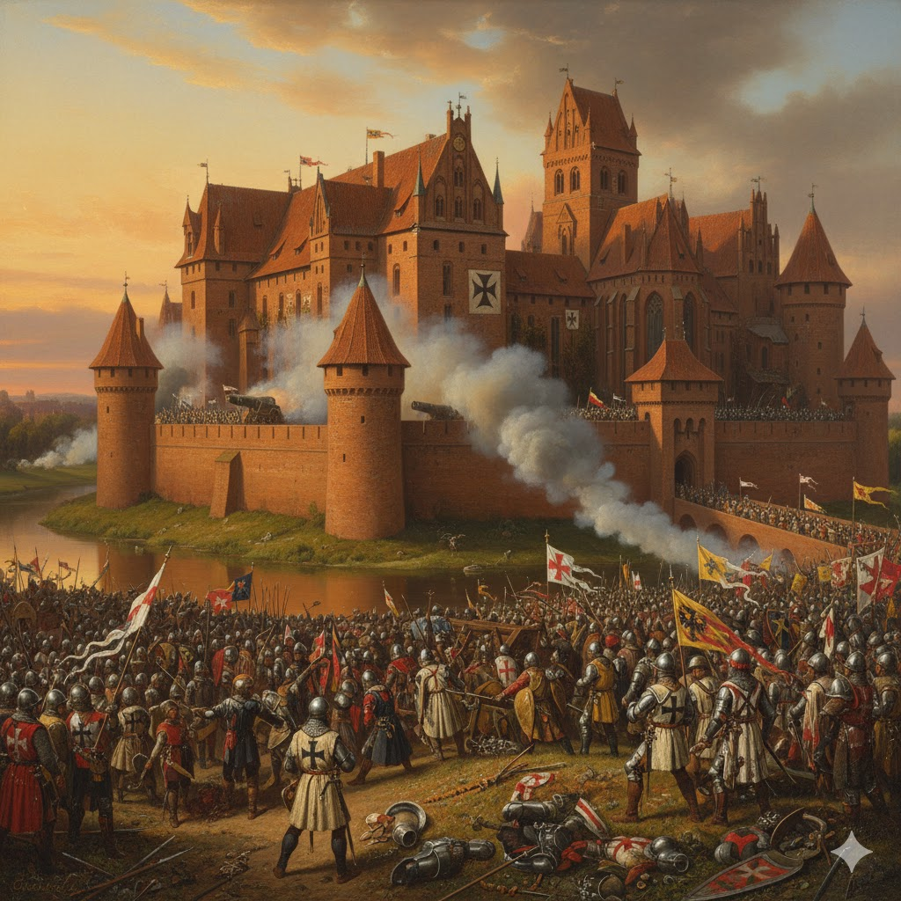
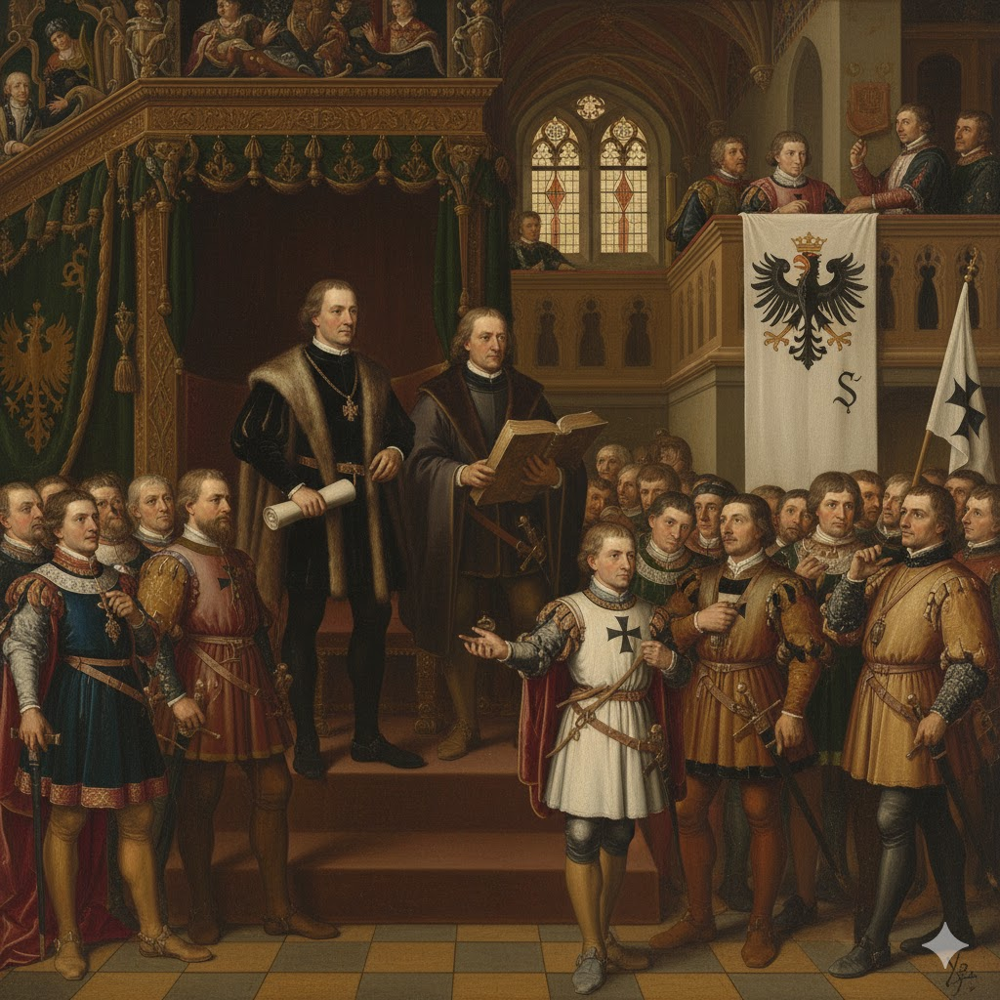
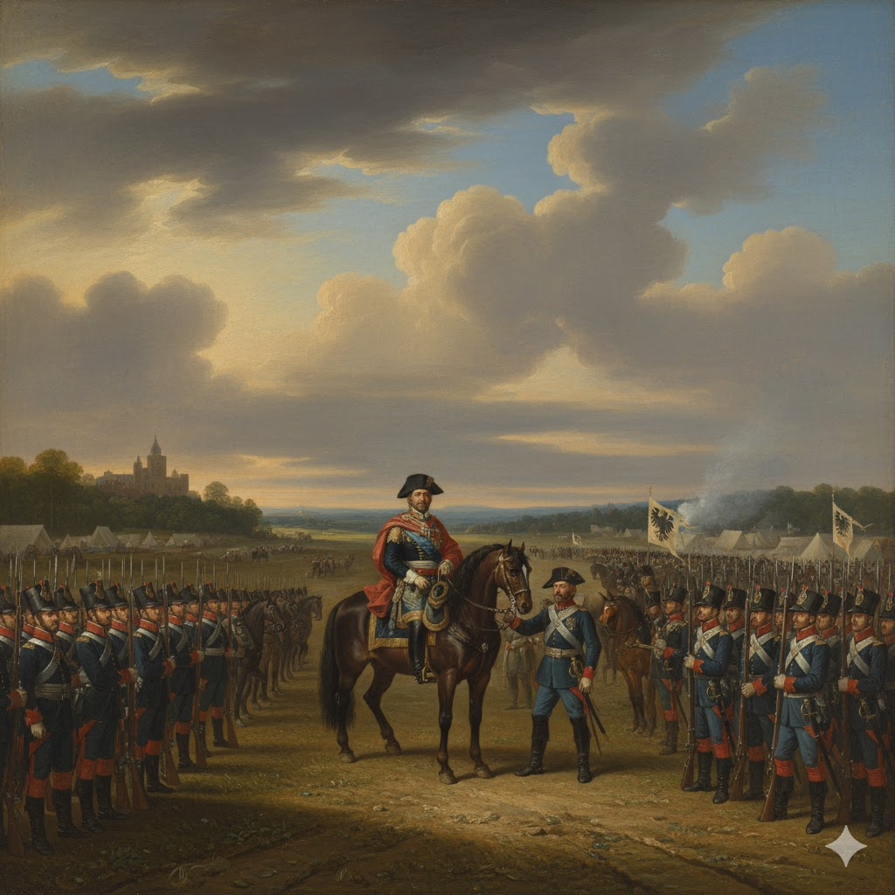
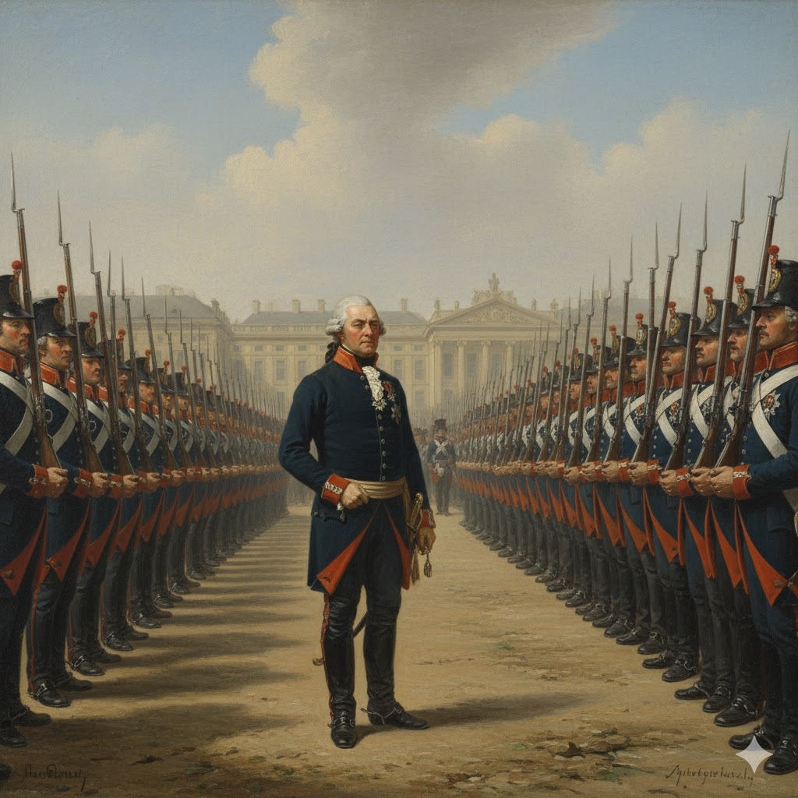
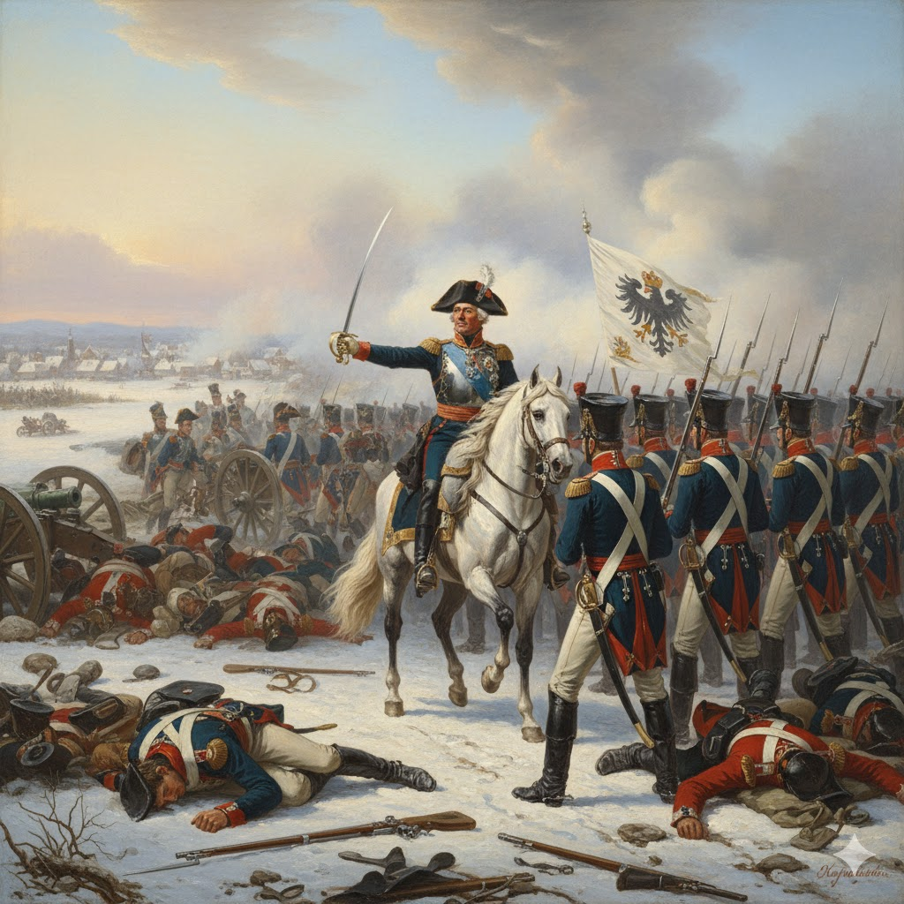
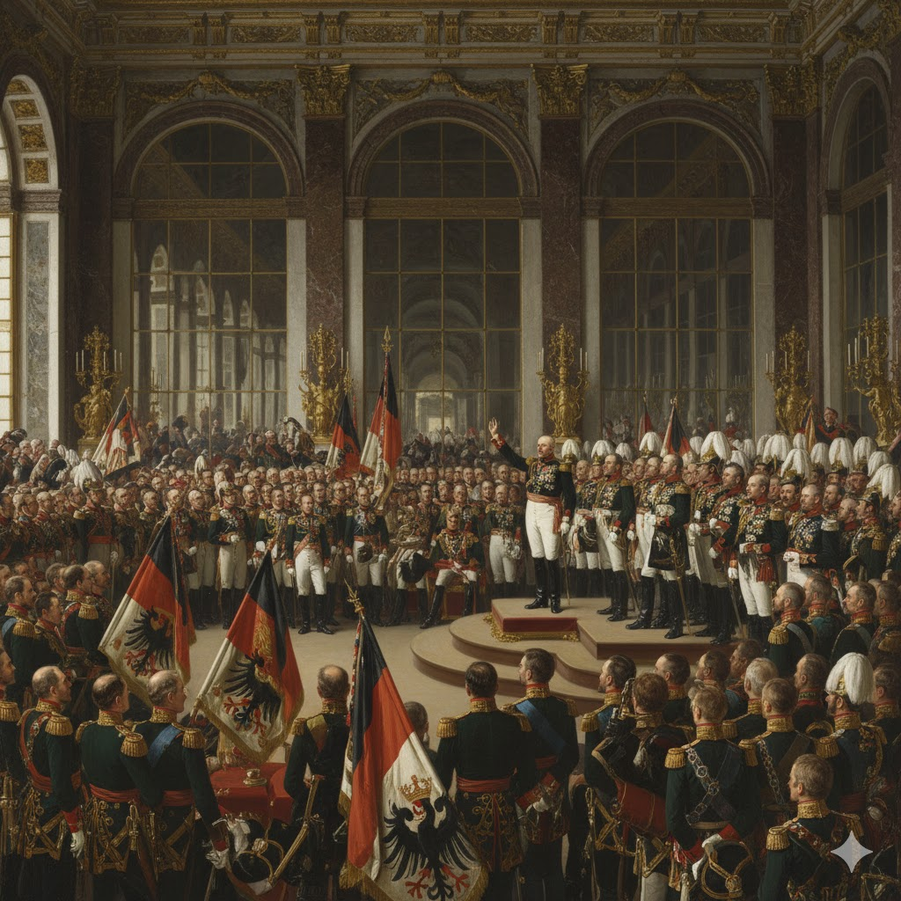
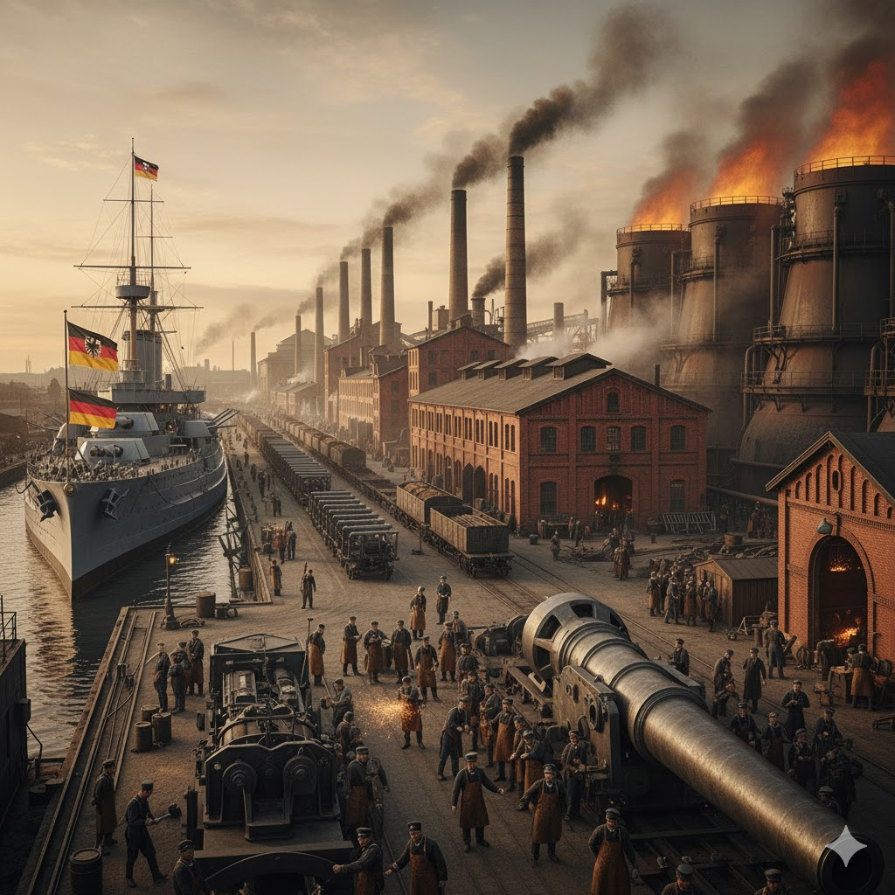

13th Century Conquest (Teutonic Knights in Battle): The period begins with the Prussian Crusade. The image represents the conquest and subjugation of the native Baltic tribes by the German Teutonic Knights, who established a brutal but powerful military theocracy.

The Ordensstaat Capital (Marienburg Castle): The massive, imposing brick fortress of Marienburg (Malbork) symbolizes the peak of the Order's territorial and economic power, serving as the central government and defense hub of the entire state.


1525: Secularization (Albert of Hohenzollern): The image depicts the revolutionary moment when the state was secularized and became the hereditary, Lutheran Duchy of Prussia. This move dissolved the medieval Order and placed the territory under the Hohenzollern dynasty (a branch of which already ruled Brandenburg).
17th Century Militarization (The Great Elector's Army): This image represents the efforts of Frederick William, the "Great Elector," to build the first reliable standing army. This military force was key to securing the Duchy's full sovereignty from Polish control in 1660 and unifying the disparate Brandenburg-Prussian territories.


Early 18th Century Discipline (Frederick William I's Troops): The image of the "Soldier King" reviewing his flawless ranks symbolizes the intense focus on military training, discipline, and fiscal responsibility that built the foundation of the legendary Prussian military machine.
Mid-18th Century Dominance (Frederick the Great in Battle): This image captures Frederick II's status as a military genius. His decisive victories, particularly in the Silesian Wars and the Seven Years' War, confirmed Prussia's status as a European Great Power and permanent rival to the Austrian Habsburgs.


1871: The Proclamation (Versailles Ceremony): The image of the ceremony in the Hall of Mirrors at Versailles marks the political triumph of Prussia, as King Wilhelm I is proclaimed German Emperor. This event established the new German Empire under effective Prussian dominance.
Late 19th Century Power (Industrialization Scene): This visual represents the massive industrial might and rapid economic growth that fueled the German Empire. Heavily influenced by Prussian efficiency and administrative competence, this industrial power was the foundation of the empire's military and global ambitions.
